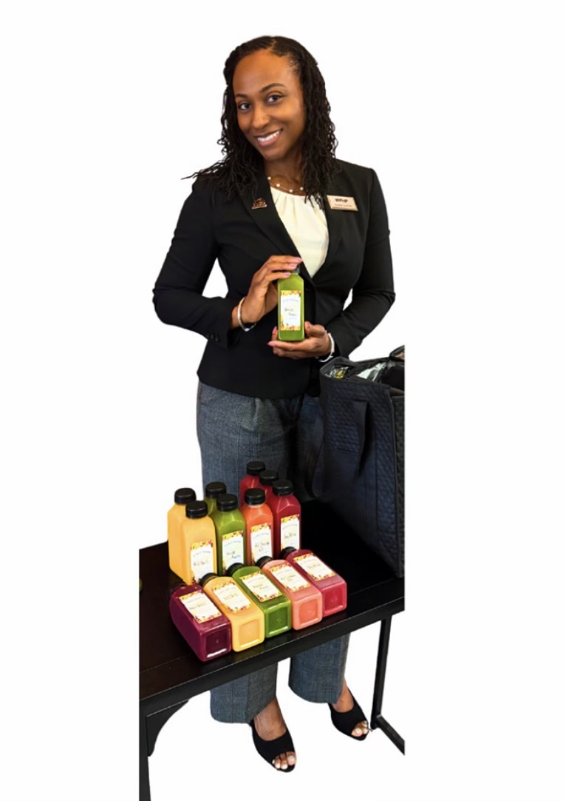

Ingredient Led
Every bottle starts with produce-forward recipes and clean ingredient lists customers can understand.
Meet the owner
Kay Joy Cold Press Juices was created around a simple belief: fresh ingredients, vibrant flavor, and care you can feel should be easy to reach.

The Story Behind the Juice
My love for cold-pressed juicing wasn't born in a kitchen; it was born from the heart.
When my grandmother, Yvonne Charles, was placed in hospice care with stage four colon cancer, it broke my heart to see the woman who defined energy and happiness throughout my childhood in so much pain.
Refusing to sit idly by, I turned to the healing power of whole foods. During a week-long visit back home, I poured all my love into pressing fresh juices for her. With every sip she took, she would find a burst of energy. In those beautiful moments, I felt like I was truly healing her from the inside out.
Before I flew back, I knew it was time to say goodbye. The high energy faded, but the lesson she left me with lasted forever. My grandmother mustered up every ounce of her strength to show me that no matter what life brings, you must "count it all joy." Those final bursts of energy weren't just physical; they were a gift of hope from her heart to mine.
Today, Yvonne Charles is the heartbeat of Kay Joy Cold Press Juices. I started this journey to bring that same healing spirit, hope, and vibrant wellness to myself and our community.
Every bottle we make is pressed, sealed, and delivered with unconditional love and pure joy.
Every bottle starts with produce-forward recipes and clean ingredient lists customers can understand.
Kay Joy is designed for easy preorders, simple pickup windows, and consistent monthly favorites.
The brand is warm, personal, and rooted in helping people add a little more color to their day.
Ready to try Kay Joy?